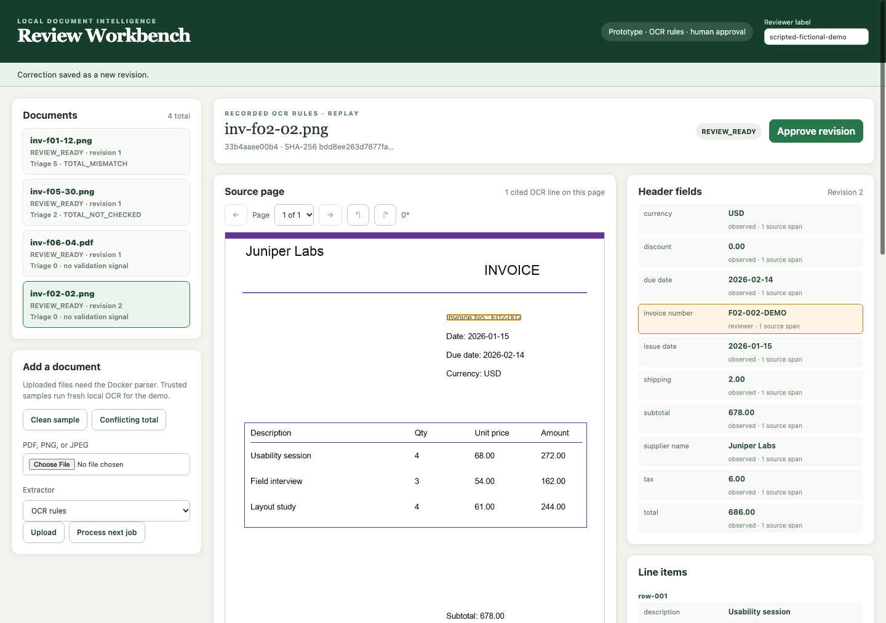
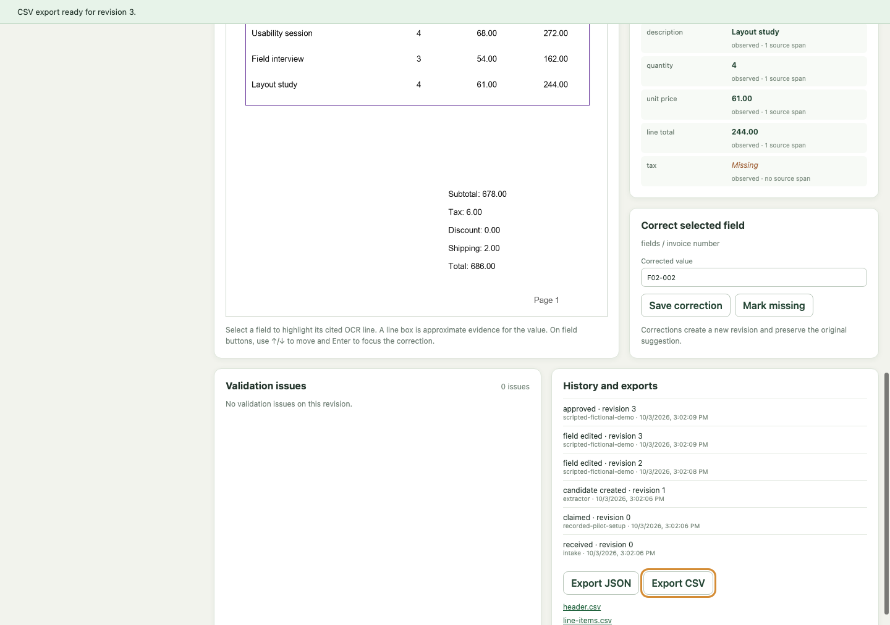
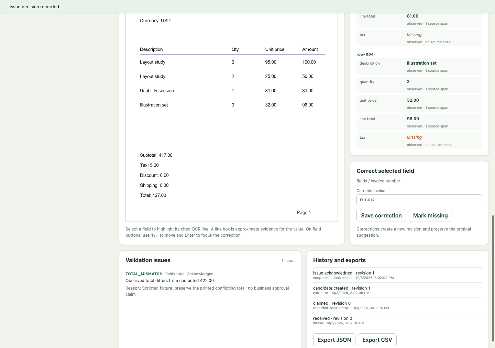
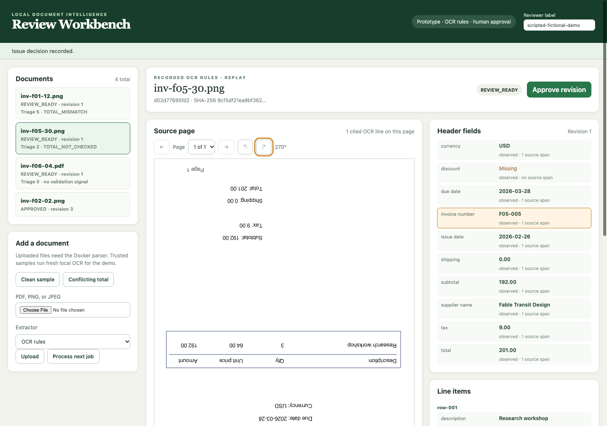
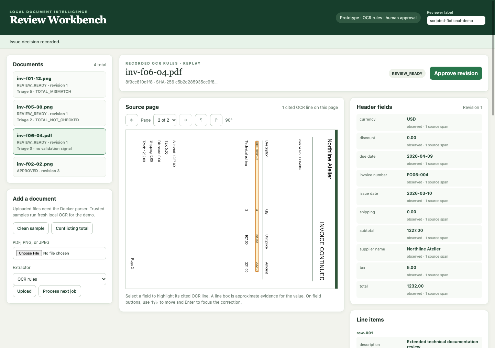

Scripted Chrome demonstration on fictional development invoices using recorded OCR suggestions. No model inference, live parsing, human timing, or productivity claim. The video assembles captioned screenshots; its duration is presentation pacing.
Verification and artifact hashes




